Plant gallery
50 collectibles in 5 levels + power-up. Flat botanical style: soft shapes, shared leaf greens, no outlines, one ground shadow.
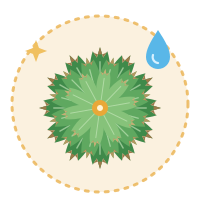
Revives 4 petals. Revived rosette with brown dry-frond tips (it looks dead, then wakes) and a water drop.rose_of_jericho.svg
Level 1 Common & familiar
Level 1 Common & familiar
Every part is edible and each seed can drift for miles.
plants/plant_dandelion.svg
Its name comes from 'day's eye': petals close at night.
plants/plant_daisy.svg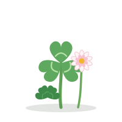
Fixes nitrogen, feeding the soil it grows in.
plants/plant_clover.svgRoots release compounds that deter harmful nematodes.
plants/plant_marigold.svg
Young blooms track the sun: heliotropism.
plants/plant_sunflower.svg
Tulip bulbs fueled a speculative price bubble in the Netherlands in the 1630s.
plants/plant_tulip.svgIts fruits, called rose hips, are rich in vitamin C.
plants/plant_rose.svg
Its seeds can lie dormant in soil for decades, sprouting when the ground is disturbed.
plants/plant_poppy.svg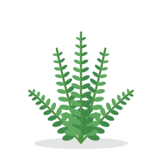
Ferns reproduce with spores rather than seeds or flowers.
plants/plant_fern.svg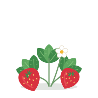
The tiny 'seeds' on its surface are actually separate fruits; the red flesh is an enlarged flower base.
plants/plant_strawberry.svgLevel 2 Familiar favorites
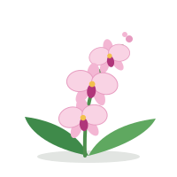
One of the two largest flowering plant families.
plants/plant_orchid.svg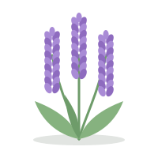
Its oil has been used in perfumery for over 2,500 years.
plants/plant_lavender.svgLeaves repel water: the 'lotus effect'.
plants/plant_lotus.svg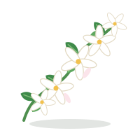
Blooms release most scent at night.
plants/plant_jasmine.svg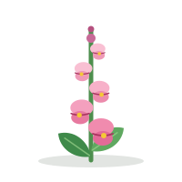
Squeeze a bloom's sides and the 'dragon' opens its mouth.
plants/plant_snapdragon.svg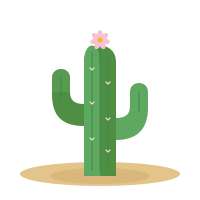
It can take 50 years or more to grow its first arm.
plants/plant_saguaro_cactus.svgIts thick leaves store a water-rich gel inside.
plants/plant_aloe_vera.svg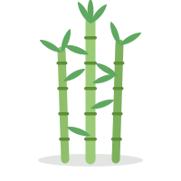
Some bamboo species can grow nearly a metre in a single day.
plants/plant_bamboo.svgEach bloom typically lasts only a day.
plants/plant_hibiscus.svg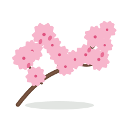
Japan's hanami custom of viewing the blossoms is centuries old.
plants/plant_cherry_blossom.svgLevel 3 Unusual
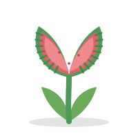
Traps shut in about 0.1s when two hairs are touched.
plants/plant_venus_flytrap.svgTrunks store up to 120,000 L of water.
plants/plant_baobab.svg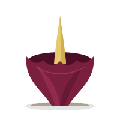
Smells like rotting flesh to attract pollinators.
plants/plant_corpse_flower.svg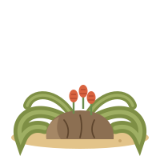
Grows only two leaves in its life, for 1,000+ years.
plants/plant_welwitschia.svg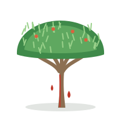
Its bark bleeds a deep red resin.
plants/plant_dragon_blood_tree.svg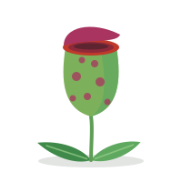
Its pitcher-shaped leaves hold digestive fluid that drowns insects.
plants/plant_pitcher_plant.svg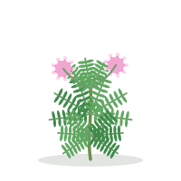
Its leaflets fold shut within seconds of being touched.
plants/plant_sensitive_plant.svgNative to South Africa, its bloom resembles a colorful bird's head.
plants/plant_bird_of_paradise.svg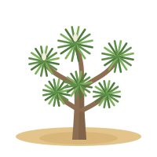
It depends on yucca moths for pollination.
plants/plant_joshua_tree.svg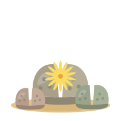
These 'living stones' from southern Africa are camouflaged to look like pebbles.
plants/plant_lithops.svgLevel 4 Rare & curious
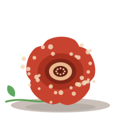
Produces the world's largest single flower, about a metre across.
plants/plant_rafflesia.svg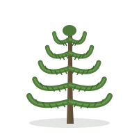
Native to Chile and Argentina, it is the national tree of Chile.
plants/plant_monkey_puzzle_tree.svg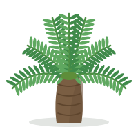
Despite the name it is not a palm but a cycad, an ancient seed-plant lineage.
plants/plant_sago_palm.svg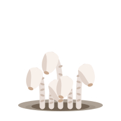
It has no chlorophyll and draws nutrients through fungi linked to tree roots.
plants/plant_ghost_pipe.svg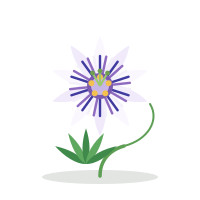
Its name comes from Spanish missionaries who saw symbols of the Passion in the bloom.
plants/plant_passionflower.svg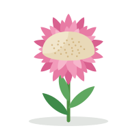
It is the national flower of South Africa.
plants/plant_king_protea.svg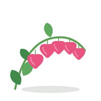
Native to Siberia, northern China, Korea and Japan.
plants/plant_bleeding_heart.svg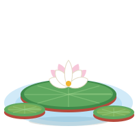
Its floating leaves can exceed 2 m across.
plants/plant_giant_water_lily.svg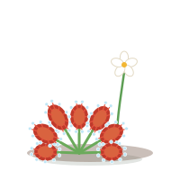
Sticky tentacles on its leaves trap and digest small insects.
plants/plant_sundew.svg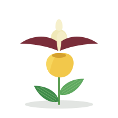
Its slipper-shaped pouch acts as a trap that guides insects past the pollen.
plants/plant_ladys_slipper_orchid.svgLevel 5 Exotic & endangered
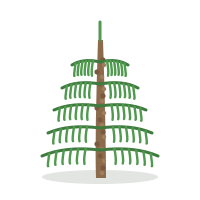
Known only from fossils until living trees were found in Australia in 1994.
plants/plant_wollemi_pine.svg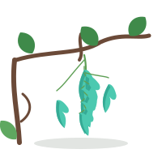
Its turquoise, claw-shaped flowers are pollinated by bats.
plants/plant_jade_vine.svg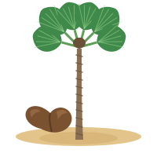
It produces the heaviest seed of any plant.
plants/plant_coco_de_mer.svg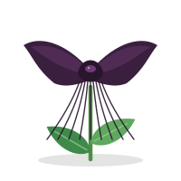
Long whisker-like bracts dangle from its near-black blooms.
plants/plant_black_bat_flower.svg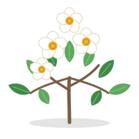
It has not been seen in the wild since the early 1800s; all living trees descend from cultivated ones.
plants/plant_franklin_tree.svg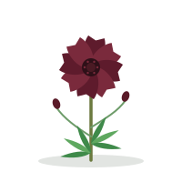
Extinct in the wild, its blooms smell of chocolate.
plants/plant_chocolate_cosmos.svg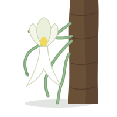
It has no leaves and photosynthesizes through its roots.
plants/plant_ghost_orchid.svg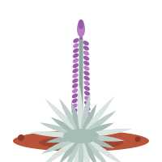
Found only in Hawaii, on high volcanic slopes.
plants/plant_silversword.svgBark peels in strips at different times, revealing multicolored layers.
plants/plant_rainbow_eucalyptus.svg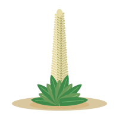
The largest bromeliad, it flowers once after many decades, then dies.
plants/plant_puya_raimondii.svg